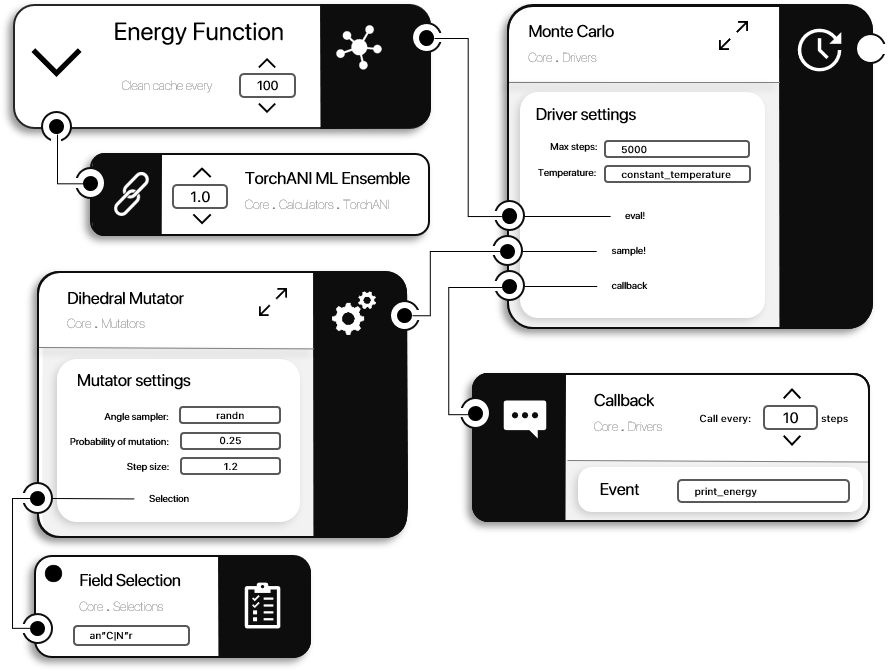

Drivers section
A Driver is a piece of code that drives the simulation forward. Usually, it includes a set of AbstractMutator instances and one or more EnergyFunction. As such, a Driver (in contrast with a simple AbstractMutator) is able to make decisions or change the course of the simulation based on the evaluation of the current State. For example, a MonteCarlo simulation may accept or reject a given conformational change (produced by one of more AbstractMutator instances) based on the evaluation of the system State by a given EnergyFunction. The current status of a simulation is stored in a DriverState instance (each Driver type has a corresponding DriverState type). For example, this can hold the current step or temperature of the simulation. Each module in ProtoSyn may include a Drivers section, adding new Driver types and methods. In the next sections, a deeper look into the inner workings of the available Driver instances is provided, organized in the following sections:
- Callbacks
- Creating custom callbacks
- Creating custom drivers
- Available drivers
- Creating custom thermostats
- Available thermostats

Figure 1 | A diagram of a MonteCarlo Driver. This Driver type requests an eval! component (in this case, an EnergyFunction, with a TorchANI Ensmeble as the single component - see get_default_torchani_ensemble) and a sample! component (in this example, a single DihedralMutator). As the naming implies, an eval! component evaluates the system's energy at any given moment in the simulation, while the sample! component drives the system from a State to the next. Optionally, a Callback callback can be provided, whose purpose is to periodically return information to the user about the current state of the simulation (i.e.: current step, temperature, energy, etc). In this example, as defined in the MonteCarlo Driver settings, the simulation will run for 5000 steps, with a constant temperature (see Available thermostats and Creating custom thermostats on how to control the temperature of a simulation).
Callbacks
Callback instances are responsible for returning information from a simulation during its runtime. This object type is usually used in Driver instances in order to print information to the user relative to the inner workings of a simulation: the current step, temperature, energy, etc.
ProtoSyn.Drivers.Callback — TypeCallback(event::Function, frequency::Int)A Callback instance is a functor, called with the following signature:
(callback::Callback)(pose::Pose, driver_state::ProtoSyn.Drivers.DriverState)A Callback expects the given DriverState driver_state to have a :step field. The input Pose pose and DriverState driver_state are passed as arguments to the event method every callback.frequency steps.
Fields
event::Function- Receives aPoseposeandDriverStatedriver_stateas input arguments, should print some useful information to the user;frequency::Int- the:eventmethod is called every:frequencysteps (when comapred to the givenDriverStatedriver_state.step).
Examples
julia> cb = ProtoSyn.Drivers.Callback((pose::Pose, driver_state::ProtoSyn.Drivers.DriverState) -> println("Status OK"), 1)
✉ Callback:
+----------------------------------------------------------------------+
| Index | Field | Value |
+----------------------------------------------------------------------+
| 1 | Event | #1 |
| 2 | Frequency | 1 |
+----------------------------------------------------------------------+
julia> cb(pose, driver_state)
Status OKCreating custom callbacks
As stated above, Callback instances are functors, usually called from within the body of a Driver instance. As such, a specific signature is expected for the :event function:
callback.event(pose::Pose, driver_state::DriverState)As an example:
julia> function event_example(pose::Pose, driver_state::ProtoSyn.Drivers.DriverState)
println("Step: $(driver_state.step) | Energy: $(pose.state.e[:Total])")
end
event_example (generic function with 1 method)
julia> callback = ProtoSyn.Drivers.Callback(event_example, 1)
✉ Callback:
+----------------------------------------------------------------------+
| Index | Field | Value |
+----------------------------------------------------------------------+
| 1 | Event | event_example |
| 2 | Frequency | 1 |
+----------------------------------------------------------------------+Creating custom drivers
Since certain Driver instances may call other Driver instances, Protosyn expects a certain signature for custom drivers and the accompanying DriverState. A Driver is a functor, meaning it is a callable object, with the following signature:
Base.@kwdef mutable struct ExampleDriverState{T <: AbstractFloat} <: DriverState
step::Int = 0
# content
end
mutable struct ExampleDriver <: Driver
callback::Opt{Callback}
# content
end
function (driver::MonteCarlo)(pose::Pose)
T = eltype(pose.state)
driver_state = ExampleDriverState{T}()
driver.callback !== nothing && driver.callback(pose, driver_state)
# content
return pose
endFrom the previous snippet of code, three important bits can be highlighted: first, the usage of Base.kwdef to define default values for the DriverState object. Altough not necessary, this eases the creation of starting DriverState instances. Second, the initial call to the :callback field in the Driver, giving as input arguments a Pose pose and DriverState driver_state, as expected. Note that this is an optional component of a standard Driver in ProtoSyn. Finally, although not necessary, some other Driver instances might expect a custom Driver to return the modified Pose pose.
Available drivers
In this seb-section, the default Driver instances made available by the Core module of ProtoSyn are further explored. Note that additional Driver types might be made available in other modules (such as Peptides).
Creating custom thermostats
Some Driver instances have a :temperature::Function field, where the temperature function takes the current :step of the simulation. This function is often referred to as a thermostat, since it regulates the temperature of the simulation, thus controlling the likelihood of acceptance of higher energy states, etc. As such, in order to create a custom thermostat, the following signature should be followed (taking a step`Int as the single input argument and returning a temperature value, usually as a Float):
return function custom_thermostat(step::Int)
# content
return temperature_value
endAvailable thermostats
ProtoSyn.Drivers.get_constant_temperature — Functionget_constant_temperature(init_temp::T) where {T <: AbstractFloat}Return a constant temperature thermostat function, set at temperature init_temp.
See also
get_linear_quench get_quadratic_quench
Examples
julia> thermostat = ProtoSyn.Drivers.get_constant_temperature(1.0)
(::ProtoSyn.Drivers.var"#constant_temperature#9"{Float64}) (generic function with 1 method)
julia> thermostat(100)
1.0ProtoSyn.Drivers.get_linear_quench — Functionget_linear_quench(init_temp::T, n_steps::Int) where {T <: AbstractFloat}Return a linear temperature quench thermostat function, beggining at temperature init_temp and reducing linearly to 0.0 during n_steps.
See also
get_constant_temperature get_quadratic_quench
Examples
julia> thermostat = ProtoSyn.Drivers.get_linear_quench(1.0, 100)
(::ProtoSyn.Drivers.var"#linear_quench#10"{Float64, Int64}) (generic function with 1 method)
julia> thermostat(0)
1.0
julia> thermostat(50)
0.5
julia> thermostat(100)
0.0ProtoSyn.Drivers.get_quadratic_quench — Functionget_quadratic_quench(init_temp::T, n_steps::Int, min_temp::T) where {T <: AbstractFloat}Return a quadratic temperature quench thermostat function, beginning at temperature init_temp and reducing to min_temp during n_steps following a quadratic curve.
See also
get_constant_temperature get_linear_quench
Examples
julia> thermostat = ProtoSyn.Drivers.get_quadratic_quench(1.0, 100, 0.0)
(::ProtoSyn.Drivers.var"#quadratic_quench#11"{Float64, Int64, Float64}) (generic function with 1 method)
julia> thermostat(0)
1.0
julia> thermostat(50)
0.25
julia> thermostat(100)
0.0